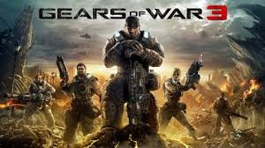

REGRESAR
GEARS OF WAR 3

Gears of War 3 es un videojuego de disparos en tercera persona, del género acción-aventura, desarrollado por Epic Games y publicado por Microsoft Game Studios exclusivamente para Xbox 360.2 Es la tercera entrega de la serie Gears of War y el juego final en la historia del arco.3 Se publicó el 20 de septiembre de 2011.4 El 31 de mayo se dio a conocer una precuela de este juego Gears of War: Judgment.
Han pasado 18 meses desde la caída de Jacinto, cuya finalidad era detener el ataque Locust. A raíz de esto, la CGO se ha desintegrado por completo y los supervivientes de tanto desastre siguen luchando por un único fin: permanecer con vida. Al encontrar una remota isla llamada Vectes para vivir mientras que un enemigo peor que los Locust, los Lambent, que resurgieron tras la caída de los Locust, se esparcen por todo el mundo de Sera, y con el presidente de la COG perdido deciden separarse. Unos deciden habitar las pocas naves tipo CNV («acorazado tipo nido») que quedan, mientras que otros se arriesgan a regresar a tierra firme y tratar de darle un fin a esta batalla. La humanidad ha sido diezmada, así como los Locust, quienes fueron expulsados de su hondonada por la inundación de sus túneles.
La historia comienza en el Sovereign con Marcus teniendo una pesadilla, recordando cómo murió su padre. Al despertar, el capitán llama por el altavoz a Marcus, a Dom y a Jace. Mientras que Cole, en compañía de Baird, Clayton Carmine y Samantha «Sam» Byrne, se dirige a las ruinas del antiguo hogar de los Hanover Cougars, el equipo de trashball donde jugaba Cole, en busca de provisiones para el barco, Marcus y los demás sufren un ataque por parte de los Lambent, con un gigantesco Leviatán Lambent.
Tras repelerlo, reciben la inesperada visita del presidente Prescott quien le entrega a Marcus un disco, que revela que Adam Fénix, su padre, está con vida pero debido al mal estado del equipo del barco, no pueden ver más de lo necesario. El equipo asume entonces que Adam está vivo y deciden ir a buscarlo. Durante el ataque, el Leviatán Lambent destroza parcialmente el barco, pero consiguen destruirlo arrojándole un contenedor repleto de Tickers gracias a la ayuda de Baird. No obstante, el barco es destruido. Tras reunirse finalmente con Cole, Baird y Sam, Marcus y Dom se enteran de que Anya y Jace están con Prescott, pero desafortunadamente, éste ha sido herido de muerte por la explosión del barco. En sus últimos momentos, Prescott le revela a Marcus que su padre sí está con vida y que se encuentra en una instalación militar llamada Azura y le entrega la información que necesita para descifrar un disco que Hoffman le había robado al presidente en Vectes. Tras decirle esto, Prescott muere.
Posteriormente logran ver el contenido del disco y se enteran de que Adam fue obligado a fingir su propia muerte, y que en realidad había sido secuestrado por Prescott y llevado a Azura para que desarrollara un arma que pudiera poner fin a la guerra. Dejando a algunos de sus Gears para ayudar a los sobrevivientes, Marcus y su equipo parten a la base de Anvil Gate a encontrarse con Hoffman donde está todo lo necesario para descifrar el contenido del disco.